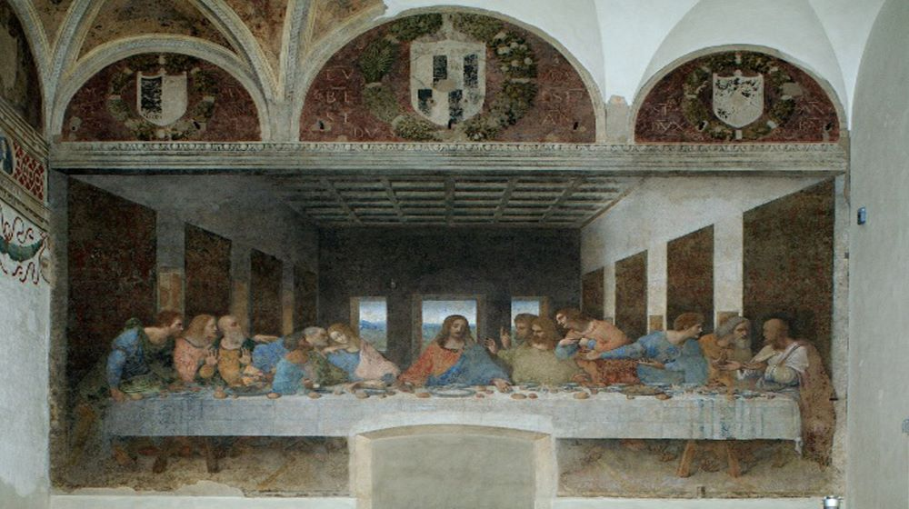
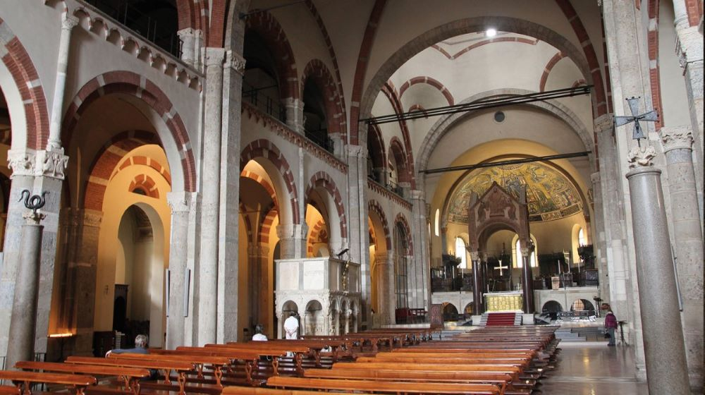

In Milan you can have many different experiences and there are fabulous places that you can explore without even putting your hand to your wallet. Here are 10 free things to do in Milan!
A short distance away from the Duomo you’ll find Sforza or Sforzesco Castle (Castello Sforzesco in italian), home to Milan’s rulers in the 15th and 16th century and still a stunning sight, standing right in the heart of the city, surrounded by moats that are home to a cute cat colony. It’s free to walk through the castle courtyards, check out the moats and see the castle from the outside. Inside the castle there are several civic museums, including an archaeological museum focusing on Egyptian artefacts, one dedicated to musical instruments, and a museum displaying Michelangelo’s masterpiece Pietà Rondanini.
There’s also an entire room decorated with frescoes by Leonardo Da Vinci, who lived in the castle for a number of years – for more info on museums, check out the castle’s official site
You can enter for free every Tuesday from 2 pm onwards, and from Wednesday to Sunday from 4.30 to closing time. How to get there: M1 Cairoli
Here are some cool Castello Sforzesco tour!

Besides the Duomo, every other church in Milan is free to enter. Here are some:
The colossal 16th-century church was built partially using older Roman edifices. Originally, it was attached to the most important Benedictine convent in Milan, Monastero Maggiore. Today, the monastery houses the astonishing Archaeological Museum. Inside the church, you’ll see remarkable artwork depicting biblical scenes. The cycle of frescos covers the walls and tells stories about the life of San Maurizio.

Initially erected in Gothic style in the 13th century, the church underwent renovation and expansion four centuries later. The modifications were in Baroque style and turned San Marco into the second-largest temple in Milan after the Duomo. Frescoes with religious scenes from different periods decorate the walls. The most prominent painting is the Madonna with Saints by Gian Paolo Lomazzo. In the left transept, you can also see a rather unusual wax statuette of the Holy Child Mary from the 19th century.

It is a massive Renaissance church and a Dominican convent. The 15th-century redbrick temple features intricate terracotta walls and elaborate Gothic interior. Santa Maria delle Grazie is a UNESCO World Heritage Site and home to Leonardo da Vinci’s The Last Supper.
It is edicated to the patron saint of Milan, Sant'Ambrogio is one of the oldest churches in the city and one of the greatest examples of Romanesque architecture in Italy. Walk through the courtyard in front of the church and observe the beautiful capitals that support the columns, all carved differently. In the church, you have to see the mosaic of the apse and remains of medieval frescoes. You will also notice a snake at the top of a column: according to a local legend, the snake will slide down on the Day of Judgment, to grab the souls of sinners and bring them to Hell.

Hunting for street art in Milan is a fun and free activity. Most are located around the Isola district, not far from Garibaldi station. Another hotspot of street art is Corso di Porta Ticinese and the Columns of San Lorenzo, the area around Via Leoncavallo, the gates surrounding the Hippodrome of San Siro and Via Gaetano Pini near Porta Romana. Lately the enel control units are colored to make the city more colorful.
To discover more click here.
This is one of the most unique and ironic places in Milan. In 2010, when Italy was in the midst of the economic recession, a sculpture depicting a hand holding the middle finger was placed in Piazza Affari, in front of the Milan Stock Exchange. The sculpture is called LOVE, an acronym for Freedom, Hate, Revenge, Eternity, the author is Maurizio Cattelan, who has never publicly commented on the meaning of his work.
To discover more click here.
Just around the corner of the Duomo you will find Piazza dei Mercanti, probably the most captivating square of the city. Piazza dei Mercanti was the heart of the city in medieval times, and it is still one of the last remaining places where you can see medieval buildings. The most evocative of all is Palazzo della Ragione, a red XIII century brick building that housed the courts and the daily market under its arches. There is also the Palazzo delle Scuole Palatine, once the most famous school in Milan, the Loggia degli Osii ornate with statues, and the Casa dei Panigarola, one of the best preserved Gothic buildings of the city.
To discover more click here.
Some museums in Milan are free. Here are some:
Contemporary art and a breathtaking view of the Duomo: two of the reasons for a visit to the Museo del Novecento in Piazza Duomo. 400 are the works of art exhibited including paintings, statues, installations and environments. The exhibition itinerary is set up in chronological order starting from Pellizza da Volpedo passing through Futurism, up to the art of the second half of the twentieth century. Absolutely not to be missed is the Sala Fontana, with its spectacular view of the Duomo and the large neon suspended from the ceiling.
Pinacoteca, Museum of the Rondanini Pietà, Museum of Decorative Arts, Museum of Furniture and Wooden Sculptures, Museum of Prehistory and Protohistory, Museum of Ancient Art, Museum of Musical Instruments The Egyptian section of the Civic Archaeological Museum is temporarily closed. The collections are exhibited in rotation at the Civic Archaeological Museum in Corso Magenta..
The Archaeological Museum offers the opportunity to dive into ancient history in an extraordinary place, the former convent of the Monastero Maggiore di San Maurizio, founded in the 8th century AD, where the history of Milan still shows its traces. The collections are exhibited in different rooms depending on the culture they belong to.
The Museum of Cultures of Milan is a center dedicated to interdisciplinary research on the cultures of the world. The new space stands out for its free and organic central hall, which generates an internal courtyard, a covered square, a meeting place between cultures and communities.
Dinosaurs, minerals, plants, molluscs or large animals: if science is your passion or if you want to discover the evolution of man and the earth, this is the place for you.
It's a space to visit with the whole family, an educational opportunity for schools and an opportunity for scientific and cultural study for all lovers of the sea. Established in 1906, the Milan Aquarium is one of the oldest in the world and is the only remaining building of the more complex structure built for the 1906 International Exhibition on the occasion of its inauguration. The complex was built on the area that later became that of the Sempione Park.
To discover more click here.

The center of Milan was once surrounded by walls. Built by the Romans, some were destroyed in the Middle Ages by Barbarossa and then others were rebuilt when the Spaniards took over in the 16th century. Majestic and guarded gates protected the entrance to the city. Some remains of the walls and doors remain and can be visited.
The most beautiful remains of Milan's ancient walls and gates are found here:

There are some neighborhoods in Milan that are really special and characteristic. These neighborhoods are perfect for taking great pictures with friends and walking around discovering new things.
Via Abramo Lincoln is a street made of pastel-colored houses and small gardens or courtyards, a place that is a sort of oasis in a thick chaotic Milan full of cars and public transport. The colored houses are not the result of chance, but of a project studied at the table at the end of the nineteenth century to redevelop an abandoned area and transform it into a sort of "workers' village" when public housing did not yet exist. To discover moreclick here
Villa Invernizzi, a due passi da casa Sola-Busca, è un’altra dimora storica di Milano che, però, non è famosa per i suoi dettagli architettonici o per le sue decorazioni, bensì per gli animali che ospita nel suo giardino: dei fenicotteri! Villa Invernizzi, a stone's throw from the Sola-Busca house, is another historic residence in Milan which, however, is not famous for its architectural details or for its decorations, but for the animals it hosts in its garden: flamingos ! The villa is privately owned, but they can be easily seen from the sidewalk, peeking through the greenery. They were brought here from Chile and Africa at the behest of Cavalier Romeo Invernizzi, in love with these particular animals and since he passed away in 2004 the Foundation has been taking care of them following the instructions left in his will. To discover moreclick here


The great Galleria Vittorio Emanuele II was designed by Giuseppe Mengoni and built between 1865 and 1877. It was then the largest shopping gallery in Europe, with a dome soaring 48 meters above its mosaic floor. Marking the beginning of modern architecture in Italy, today it stands as a splendid example of industrial construction in iron and glass of the nineteenth century. And it is still a beautiful and lively place where the locals meet for lunch or coffee in its elegant cafes and curious in its luxury shops. It is so much a part of local life that the Milanese call it "the drawing room."
To discover more click here

The Navigli are part of historic Milan. In ancient times the whole city was connected by canals, similar to Venice. Today most of the canals have disappeared, but the Navigli remains a canal-based district. There are two main canals: the Naviglio Pavese and the Naviglio Grande. The bridges of the Naviglio Grande welcome visitors at sunset with an amazing view. The Navigli district specializes in clubs, cafes and vintage shops. Lifestyle reigns supreme here. You can start the walk from the Columns of San Lorenzo, an ancient colonnade in front of the Basilica of San Lorenzo. During the day, this place serves as a meeting point for artists and students who read books or chat with friends; the nights transform it into a springboard for the hopper clubs, the nightlife in the evening is a lot in fact lately there have also been cases of snatching and stabbing, in fact the security has increased.
To discover more click here.